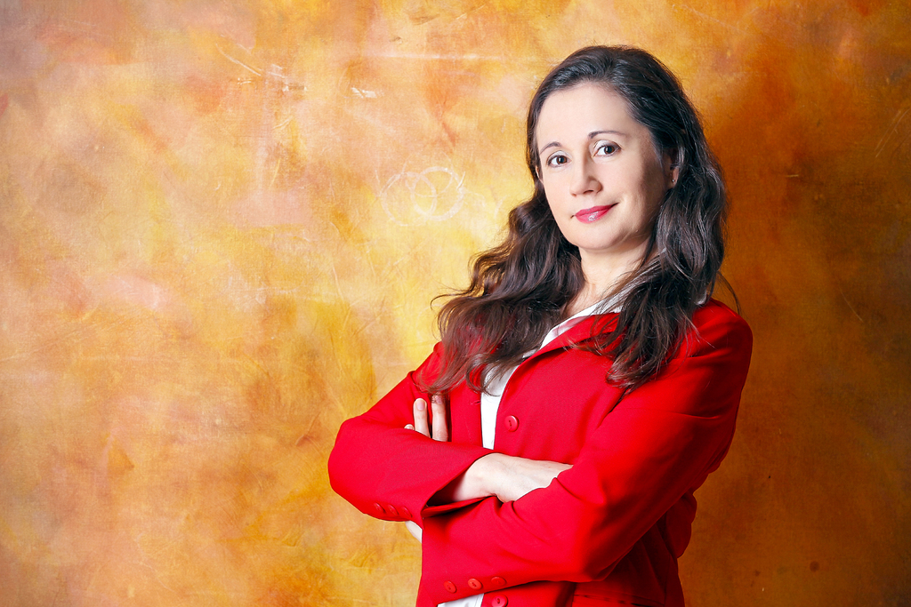
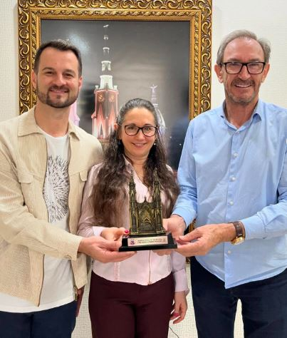
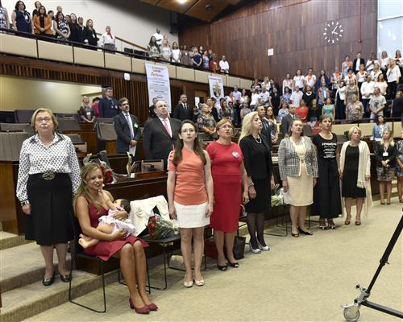

Reconhecimento público
Homenagens ao Movimento Meninas Olímpicas
As ações do Movimento Meninas Olímpicas foram reconhecidas por diferentes instituições brasileiras, com premiações concedidas à coordenadora nacional, Profa. Nara Bigolin.
Ver homenagens


Prêmios e distinções
Reconhecimento pelo trabalho de incentivo às meninas
As premiações registradas nesta página reconhecem a contribuição do Movimento Meninas Olímpicas para a educação, a ciência, a cidadania e a ampliação da participação feminina em olimpíadas científicas.
2018–2019
Primeiras homenagens
2018
2019
2019
Finalista do Prêmio Educação 2018 e 2019
Concedido pelo Sindicato dos Professores do Rio Grande do Sul .
2018
Agraciada com o Prêmio Mulher Cidadã RS 2018
Concedido pela Assembleia Legislativa do Rio Grande do Sul .
2018
Agraciada com a Medalha Nacional do Mérito Educativo 2018
Concedida pelo Presidente da República.
2018
Homenageada na Olimpíada Internacional de Matemática 2018
Reconhecimento pela criação do Prêmio Meninas Olímpicas na International Mathematical Olympiad.
2019
Indicada à Medalha Mietta Santiago 2019
Concedida pela Câmara dos Deputados .
2024
Homenagens recentes
Prêmio Mulheres na Ciência Amélia Império Hamburger 2024
Concedido pela Câmara dos Deputados .
1º Prêmio Ana Primavesi 2024
Organizado pelo Grupo Diário de Santa Maria .
Prêmio Cidadã Transformadora 2024
Concedido pela Prefeitura Municipal de Frederico Westphalen .
Eleita Embaixadora da ONAD 2024
Homenagem organizada pela União Nacional de Astronomia .
Eleita Embaixadora Científica da ONIA 2024
Homenagem organizada pela EDUSPACE e pelo Instituto de Inteligência Artificial do LNCC .
Meninas olímpicas de hoje serão as mulheres nos espaços de poder amanhã.
Desde 2016 incentivando as meninas olímpicas.